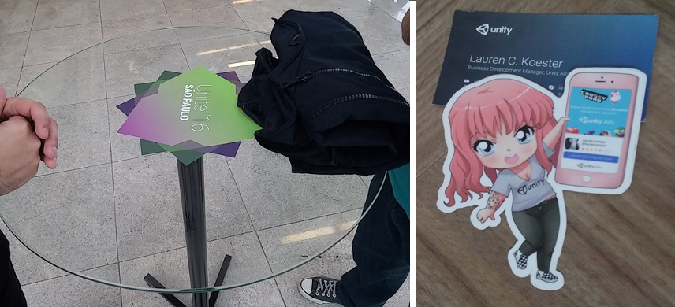

My role in this project: EVERYTHING!
tl;dr: Another sort of "runner" game where you swipe to create wind and get your little creature as high as possible, while avoiding obstacles. The simple idea was devised by me during a game jam.
The concept behind Up, Up! was created during a ludum dare game jam. The theme was Ancient Technology, and I quickly came up with the idea of making a game with physics-based movement, where you created wind to go as high up as possible. The game was unoriginally called "WindPowered!" and I managed to make it during the 72 hours available to me. You can play it here(might take a while to load, sit tight!)
It was the only game jam competition that I managed to finish a presentable game, but unfortunately, it was also the only one where they didn't hold votings for different categories due to a problem they were having. The really nice comments that people made were awesome to read, though.

The most important part of this is that I was able to make a game with some fun potential, from scratch, in 3 days. I wondered if I could make an improved commercial version in maybe a month - I had just left my previous job, and could use some ad revenue money. I had some savings that I could use to last for a month anyway. That's when I came up with Up, Up!
The premise of the game is the same. Swipe to create wind. Move up and avoid obstacles, find challenges along the way. Instead of using the 2D graphics of the game jam, I chose to make it hard-edge 3D lowpoly, with no textures, just painted polygons.
I thought of some small features to make the gameplay less bland. One feature was already present in WindPowered!, so I took it and improved it - Wind gates, as I called them, were literal gates blocking upward movement, and to open these gates you have to swipe in the direction where the arrows are poiting, in the order displayed onscreen. There were other types of gates planned, like the windy crank gate, which would spin if you created wind, so you needed to keep making wind to spin it so it would slowly open up.

Another nice little system that was starting to take shape was the weather and random event system. In the latest version there was just lightning, thought I made it easy-ish to add new events. After a certain height was passed, there was a tiny chance on each swipe that would cause lightning and a storm.

Another element I added to the game is a simple crafting system. You gathered resources during the game and could use those to craft other resources and items. You start with broken crafting stations that you have to repair to be able to use, and as you repair them you are given access to new items you can make. You can also repair the mines and use pickaxes to get ores, by actively reaching certain distances, depending on the ore. For instance, if a certain ore required 1000 meters, you'd get it after playing once and reaching 400 meters and then another time and reaching 600 meters. Rare ores would require a lot of meters to be gathered. The ultimate items were shields that broke after a few impacts, to help you reach new heights. But I had a few ideas for other items that could make the game more interesting, I just didn't want to add them to the GDD or else i'd take too long to finish the game. I had only 1 month, after all.
During the development of the game, I was fortunate enough to be able to afford to go to Unite 2016 with a couple game developer buddies of mine. There I watched a presentation about using Unity Ads, exactly what I needed in my game. The presentation was given by Lauren Koester, then business development manager at Unity Ads. It was not so much about the technical part of implementing ads in a game, but more about engaging ways to do it. After her presentation I was humbled to be able to meet her and show her Up, Up! and get some guidance on ways to monetize my game in an honest, but engaging way. She gave me her card and a really cool sticker. :D
After the event I came home with my notes and started to create the variables and classes that would make the monetization of my game possible. The first thing that I tried to make was the "watch an ad to revive" system. The concept was simple enough, but I had trouble when it came to implementing daily ad limits.

It was almost the end of the month and my funds ran out. It turned out that one month was not enough to finish the game, even though I managed to get a lot done in such little time. I had to move on to doing freelance stuff and had to shelf the project. Much later I tried to go back to the project again, while still working on other projects, but failed to continue working on it properly - it was very hard to understand the code that I once wrote, and I also had some trouble authenticating the project with google play again, so I decided that until I have more time to work with it, i'll just leave it as it is.